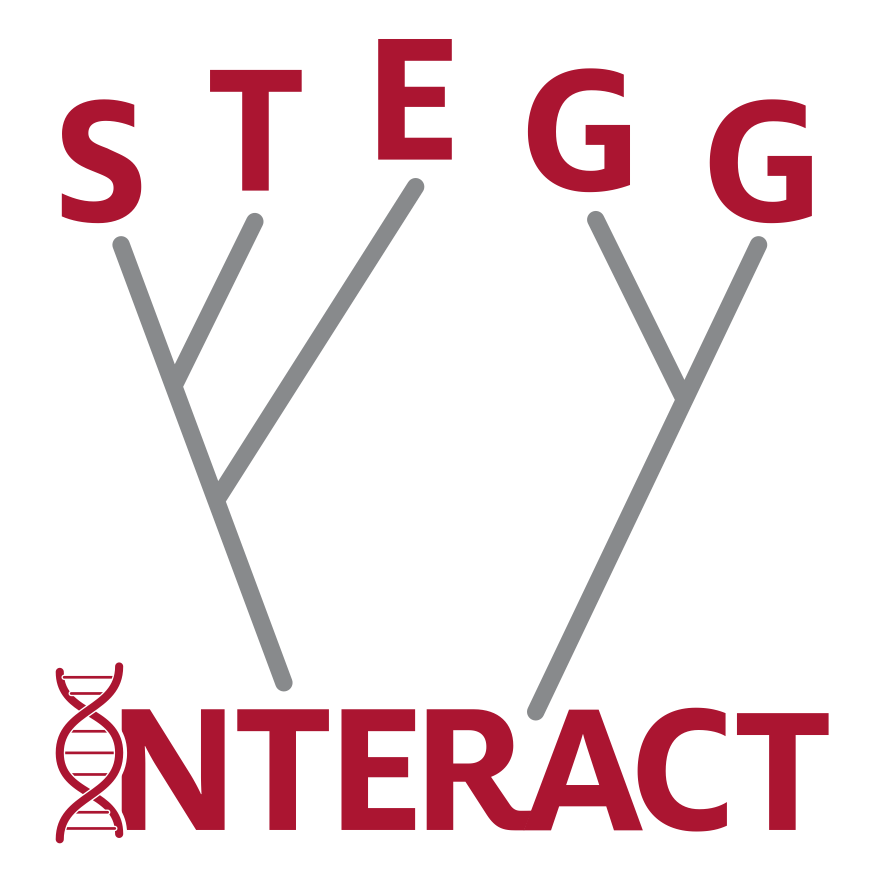
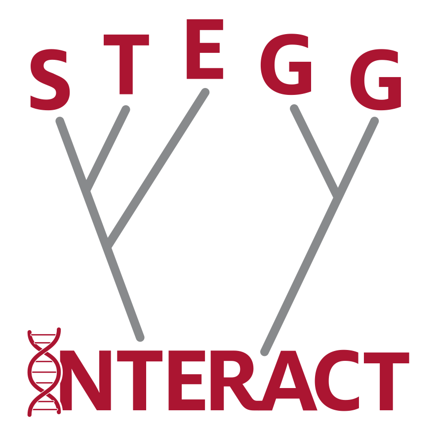
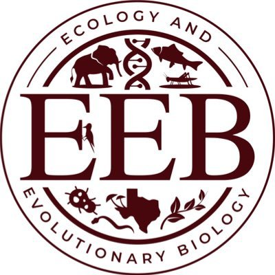

Southeast Texas Evolutionary Genetics & Genomics Symposium
STEGG is an annual one-day symposium that brings together researchers from Texas A&M University, the University of Houston, Rice University, and other institutions in the region. Its aim is to foster collaboration and highlight research in evolutionary biology, population genomics, quantitative genetics, and related fields.
The event features student and faculty talks, poster presentations, and networking opportunities—all centered around the dynamic and growing evolutionary genetics and genomics community in Southeast Texas. The Southeast Texas Evolutionary Genetics and Genomics (STEGG) 2025 Symposium will be held on Friday, May 30, 2025, in the Innovative Learning Classroom Building (ILCB) at Texas A&M University.
This year STEGG will also feature the research of the first cohort of postbacs from the University of Houston led STEGG-Interact NSF funded postbac program. This year-long program, allows participants to engage in collaborative research projects addressing a variety of questions about the evolution of biological interactions, including interactions among molecules within cells, between sexes within populations, and across species in communities. Come and see the amazing work they have been doing over the past year.
Registration (deadline May 20th)
Register here for the conference, talks, and posters.
Talks should be 10-12 minutes long leaving 3-5 minutes for questions
The maximum size for posters is 48"x48"
Venue & Parking
STEGG will take place in room 207 on the second floor of the Innovative Learning Classroom Building (ILCB), located at 215 Lamar St, College Station, TX 77844. When you enter the building, take the staircase directly in front of you up one flight to reach room 207.
Visitor Parking is available next to the ILCB in the Gene Stallings Blvd. Garage.
Refreshments and a light lunch will be provided.
Schedule
- May 30, 2025
- 9:00 AM: Sign-In
- 10:00 AM – 5:00 PM: Conference
- 5:00 PM – 7:00 PM: Happy Hour
Contact
For questions or comments, please contact Heath Blackmon at blackmon@tamu.edu.
Support
Support for the STEGG conference has been provided by:
